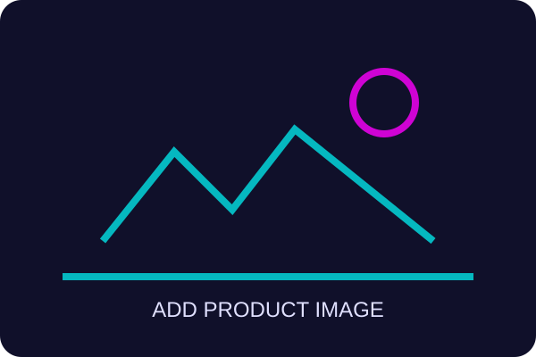

Crown XLS1002
Review: A lightweight class-D amplifier with useful DSP, flexible output modes and enough headroom for compact passive rigs. It is easy to rack and straightforward to configure.
Best for: Small sound systems and installations.
Check price on Amazon UK